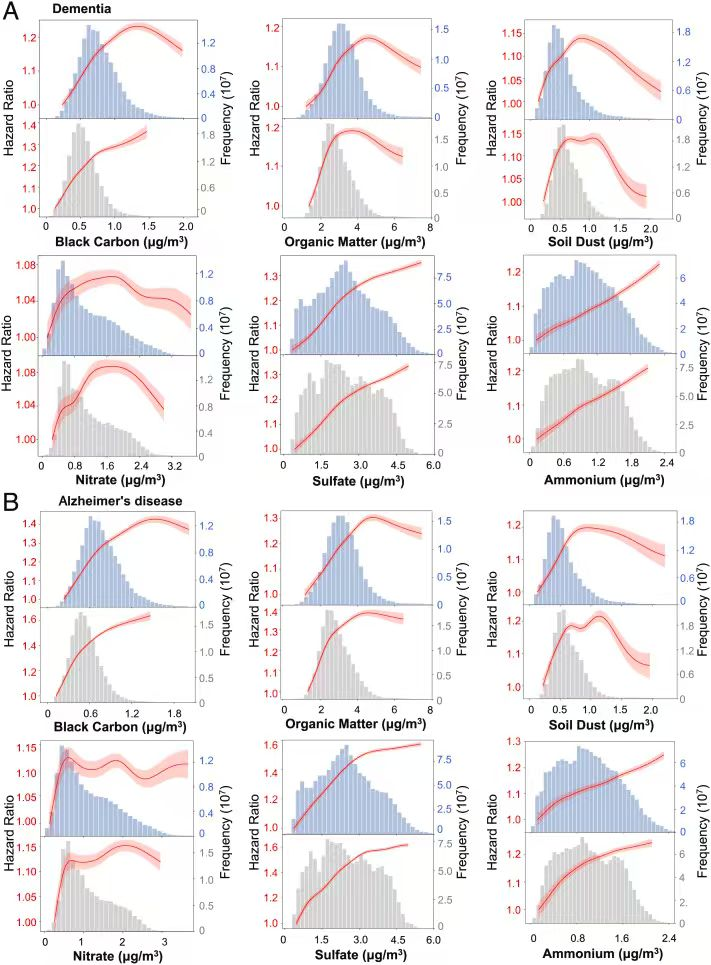
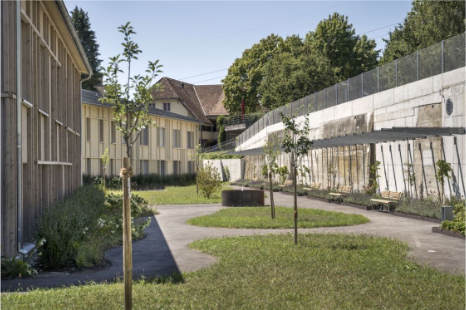
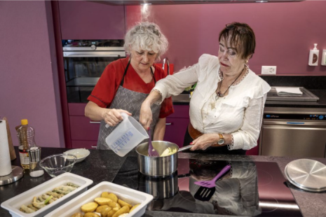
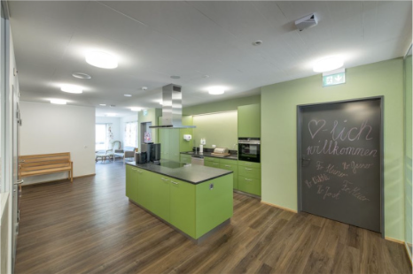

When Forgetting
Becomes a
Disease.
Yue Yin · Yi Lu · Shengyue Yang
Every memory begins with a connection.
Five words.
Ten seconds.
Remember them without writing them down.
What stayed with you?
River · Apple · Window · Velvet · Lantern
A classroom activity, not a diagnostic test.
When does forgetting
change everyday life?
Follow the connection.
Dementia in China
Estimated dementia prevalence
in a national study published in 2020.
The study included 46,011 adults.
The adjusted estimate was 6.0%.
Jia et al. (2020), The Lancet Public Health. doi:10.1016/S2468-2667(20)30185-7
“I forgot my neighbour’s name.”
He remembers it later.
He manages daily life independently.
Normal aging
Occasional forgetting with preserved independent daily function fits normal aging in this simplified example.
“I need reminders for appointments.”
He uses notes and phone reminders.
He still cooks, shops and manages money.
Possible MCI
Greater cognitive difficulty than expected for age, with independence largely preserved, suggests possible mild cognitive impairment. MCI does not always progress to dementia.
“I got lost on my usual way home.”
She misses bills and takes the wrong medication.
Her child now manages her daily affairs.
Possible dementia
This example involves cognitive changes interfering with independent daily functioning. It needs professional assessment. These are illustrative cases, not diagnoses.
Small changes
Handles tasks independentlyBeyond expected aging
Manages with extra effortSubstantial decline
Needs help with daily tasksDoes cognitive decline interfere
with independent daily life?
National Institute on Aging (2022); WHO, Dementia
An umbrella term
Dementia affects memory, thinking
and everyday functioning.
Alzheimer’s disease
is its most common cause.
Dementia is not a normal part of aging.
WHO, Dementia; Alzheimer’s Association, What is dementia?
When communication
breaks down.
Brain cells are damaged
Different diseases can cause the damage.
Communication is disrupted
Cells cannot work together normally.
Daily life is affected
Memory, thinking and familiar tasks become harder.
Conceptual disruption. No measured brain or individual disease timeline is depicted.
Alzheimer’s Association, What is dementia?
Similar symptoms.
Different explanations.
Some causes of cognitive symptoms are treatable.
Medication side effects
Thyroid problems
Vitamin deficiencies
Symptoms may improve when the underlying cause is treated.
National Institute on Aging; Alzheimer’s Association; supplied teaching deck
Risk has more
than one source.
Age is the strongest known risk factor.
What does the evidence show for PM₂.₅?
WHO, Dementia; Livingston et al. (2024); Shi et al. (2023)
Different constituents.
Different associations.
Point estimates reported in the article. Axis starts at HR = 1.00. Full original figure includes both exposure datasets, per-IQR and per-1 μg/m³ panels, and 95% confidence intervals.
Association does not establish causation.
Shi et al. (2023), PNAS. doi:10.1073/pnas.2211282119
Look inside the relationship.

Original evidence, retained as image panels. The reveal slider changes visibility, not the concentration or risk estimate.
Shi et al. (2023), PNAS, Fig. 4. doi:10.1073/pnas.2211282119
There is room
to reduce risk.
of dementia cases could potentially
be prevented or delayed by addressing
14 modifiable risk factors.
A global population estimate.
Not a promise for any individual.
The 45 highlighted dots illustrate the rounded population estimate, not identified individuals.
Livingston et al. (2024), The Lancet Commission. doi:10.1016/S0140-6736(24)01296-0
Small actions.
Long-term habits.
Move regularly
Aim for at least 150 minutes of moderate activity per week, as appropriate.
Protect vascular health
Manage blood pressure, cholesterol and blood sugar.
Take hearing seriously
Seek hearing assessment and care when needed.
Reduce harmful exposures
Avoid smoking and harmful alcohol use. Reduce air pollution exposure.
Stay engaged
Maintain social and cognitive activities and a balanced diet.
Risk reduction cannot guarantee prevention for an individual.
WHO, Dementia; WHO physical activity guidelines; supplied teaching deck
Could mahjong
play a role?
Nearly 12,000 Chinese adults aged 65+
Up to 10 years of follow-up
Almost-daily players had lower dementia risk
than people who rarely or never played.
Remembering tiles, making decisions and social contact
are possible explanations, not proven mechanisms.
An association, not proof of prevention.
Tian et al. (2022), Frontiers in Aging Neuroscience. doi:10.3389/fnagi.2022.966647. Photo supplied for this presentation.
Care includes
the caregiver.
A place to connect
Tea activities, music and emotional support.
Practical family training
Assistive equipment, nutrition and stress relief.
Guidance at home
One-to-one assessment and links to suitable professionals.
Room to rest
Shanghai’s 2025–2030 plan encourages respite services.
Changning District Government (2024); Shanghai Civil Affairs Bureau (2025). Photo and local source attribution from the supplied deck.
Familiar life. Supportive spaces.
Walk
Paths return to a square within a protected area.
Cook
Shopping and shared kitchens support familiar daily activities.
Find
Contrasting doors help people recognise spaces.



Ideas for China: clear routes, supported activities and easy-to-see signs.
SRO (2022); nefl / SDA (2022); dahlia oberaargau official gallery. Sources and photos from the supplied deck.
Support can protect
independence
and dignity.
The supportive connections are around the person.
They do not imply reversal of dementia.
Memory matters.
So does independence.
Recognise changes.
Reduce risks.
Support people and families.
What is one thing you will remember?
Sources & further reading
References 1 / 2
Local care examples: Changning District Government (2024), Shanghai Civil Affairs Bureau (2025), SRO (2022), nefl / SDA (2022), and dahlia oberaargau, as cited in the supplied deck.
Full original slide text and references are preserved in the package. Neural visuals are original conceptual diagrams. Research figures and care photographs come from user-supplied materials.